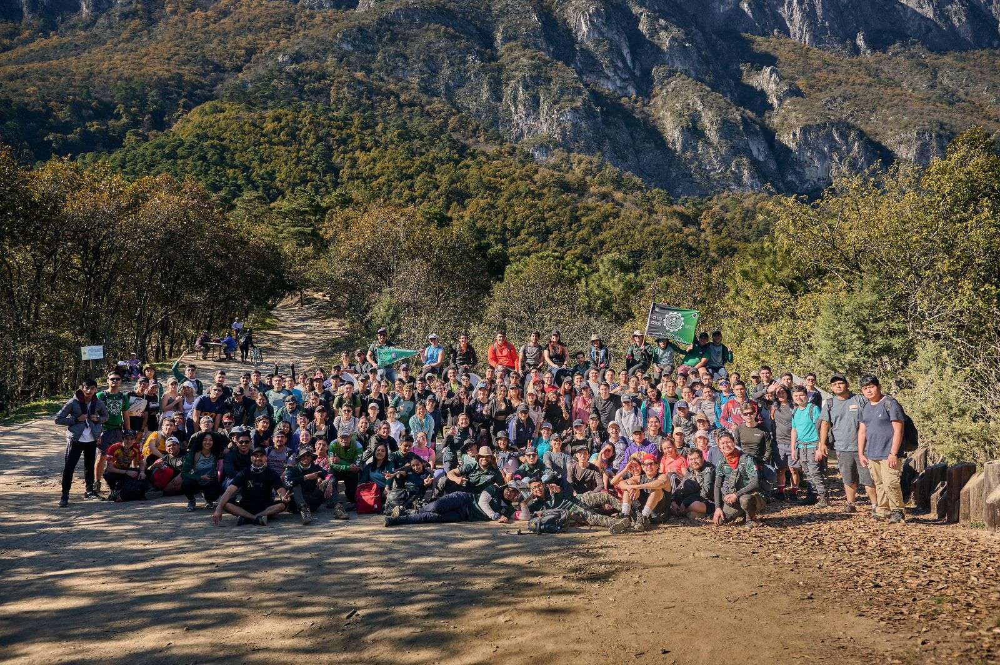

IMPECABLES: FIME INICIA LA TEMPORADA INVICTA
Sebastian Ruiz
Tras una semana de intensos(y algunos no tanto) enfrentamientos contra las facultades rivales, FIME se alza con la totalidad de victorias en esta primer jornada. El semestre académico ha comenzado con un impresionante logro para la FIME. Los equipos deportivos de la facultad han arrasado en sus primeros encuentros, ganando todos sus partidos y estableciendo un récord impecable en el inicio de la temporada.
Desde el fútbol hasta el baloncesto, pasando por tambien por voleibol y softbol, los estudiantes de ingeniería han demostrado su destreza y habilidades deportivas en cada competencia. La dedicación y el esfuerzo de los jugadores, combinados con el apoyo y la estrategia de los entrenadores, han sido clave para este éxito temprano que sienta un buen punto de apoyo para esta nueva temporada deportiva en la UANL.
Uno de los partidos destacados de la semana fue sin miramientos el partido de FIME B contra FACPYA de basquetball. A través de este juego en particular, se noto en la audiencia un buen bullicio que no correspondia al primer juego de la temporada, todo generado por el nivel mostrado por las jugadoras de ambos bandos.
El juego comenzo bien para FIME anotado los primeros 2 puntos en menos de 30 segundos solo para ser contestado inmediatamente por otra canasta por parte de las rivales, lo cual ya iba dando indicios de lo renhido que iba a estar el juego. Tras 2 periodos con un ligero dominio
por parte de FACPYA, FIME retomo la iniciativa tras el descanso en el segundo periodo y empezo a jugar mejor, logrando alcanzar y tomar una comoda ventaja a las rivales. Todo se veia recargado para las osas mas en un arrebato de inspiracion encabezado por la jugadora 7 rival, FACPYA empezo a recortar terreno y se acerco peligrosamente a nuestras jugadoras. Un par de buenas jugadas de nuestra numero 27 les volvio a sacar ventaja en el marcador, aunque las oponentes seguian teniendo control en la pista mas no se veia reflejado en el marcador. Esto les costaria caro, pues en un arrebato de inspiracion, tras una perdida de balon
nuevamente nuestra jugadora 27 realizo una jugada extraordinaria anotando de 3 puntos a falta de 1 minuto en el reloj, destruyendo las esperanzas de las rivales quienes hasta entonces estaban a nada de empatar el juego, el cual terminaria 38-31.
Ademas de la jugadora 27 destacamos como jugadora clave a la numero 11,, por lo cual decidimos hacerle unas preguntas. En la perspectiva de la joven atleta, cuyo nombre es Fernanda Candelas y pertenece a la carrera de Aeronáutica en el segundo semestre, el jugar con su equipo es placentero, cómodo e implica que hay una buena química entre los miembros de su equipo, lo cual afecta positivamente al rendimiento del equipo en la pista. Cuando se le pregunto si se había dado cuenta de haber destacado dijo que no y que al contrario, se sentía bastante nerviosa, puesto que era su debut. También menciono que, aunque no tiene deseos de llegar a ser profesional, esta dispuesta a seguir dandolo todo para llevar a su equipo lo mas lejos posible esta temporada.
Tambien queremos destacar el partido de FIME vs ODONTOLOGIA de futbol rapido, que le hizo honor a su nombre.
Fue difícil encontrar a solo un jugador que estuviera destacando ya que todos daban el mismo esfuerzo que un alumno en 6as. Después de una ventaja a nuestro favor muy grande y un preámbulo donde la pelota estaba viajando de un lado a otro, FIME gano con 4-1. En el testimonio de un jugador menciona que ellos saben que están trabajando muy duro para ser buenos en el deporte y que a pesar de que saben que se ganaron este partido, entran a la victoria con modestia.
Este logro no solo es motivo de orgullo para la Direccion de Deportes por su gran trabajo, sino que también refleja el espíritu de trabajo en equipo y la determinación que caracterizan a nuestros estudiantes. Estamos emocionados de ver cómo continúan desempeñándose en las próximas competiciones y estamos seguros de que seguirán representando a nuestra facultad con excelencia en el campo de juego.
INTRAFIME: COMIENZAN LAS ELIMINATORIAS
Sebastian Ruiz
Un nueva edicion de nuestro torneo mas clasico en FIME, el Torneo Intramuros de Futbol Rapido, ya ha comenzado sus eliminatorias y el alma de los jugadores ya se nota en los partidos que hemos presenciado en esta primera ronda.
Esto lo pudimos notar claramente en el ultimo partido de la tanda eliminatoria en el cual los Kekines vencieron 5 a 1 al equipo contrario. De destacar que apesar de que el otro equipo estaba corto de efectivos, ya que jugaron solo con la mitad del equipo, aun asi mostraron gallardia y caracter en el juego, dandolo todo, pudiendose ir al final con la frente en alto pese a su eliminacion.
Si un árbol cae en medio del bosque y no hay nadie para escucharlo, en realidad hace sonido? Preguntense eso antes de decidir si ir o no a un partido, sea de un deporte popular o no. En lugar de preguntar lo que FIME puede hacer por ti, pregúntense que pueden hacer ustedes por la FIME! El apoyo entre nosotros genera relaciones y comunidades inquebrantables, dandonos la oportunidad de generar un cambio. A continuacion les compartimos los horarios de los enfrentamientos destacados:
OSOS MONTAÑEROS: CHIPINQUE

Marco Arreola
El equipo de excursionismo de la Facultad de Ingeniería Mecanica y Electrica de la UANL ha dado inicio a su pretemporada con una emocionante y exitosa primera excursión. Los Osos Excursionistas, se embarcaron en una pronta travesía en el Mirador del Pinal, en Chipinque, demostrando su destreza y habilidades en el senderismo y la supervivencia en la naturaleza.
El cerro del Oso o cerro de Chipinque es una montaña ubicada entre los municipios de San Pedro Garza García, Monterrey y Santa Catarina del estado de Nuevo León, México. La montaña forma parte de la Sierra Madre Oriental y del parque nacional Cumbres de Monterrey, ubicandose su cima a 2,230 metros sobre el nivel del mar.
La excursion, que se considera sencilla y por lo tanto un buen punto de partida para todos aquellos que inician en este maravilloso deporte, dio inicio a la pretemporada, siendo desde hace ya tiempo una tradicion en el club el iniciarte escalando la montaña con el nombre de la mascota no solo del club sino de la facultad.
Atendiendo al llamado y dispuestos a entrar en las filas del club acudieron a la cita aproximadamente 170 alumnos de la facultad, los cuales fueron guiados con exito por David Lara y Estela Gongora, presidente y vicepresidente del club respectivamente.
La primera excursión de pretemporada de los Osos Excursionistas de la FIME ha sido un gran comienzo para el equipo, y ha sentado las bases para una temporada exitosa y llena de logros. ¡Vamos Osos!